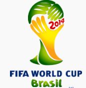
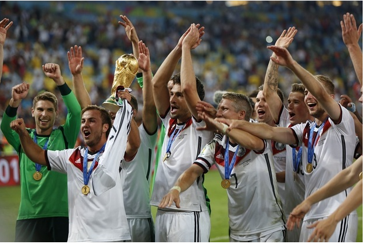
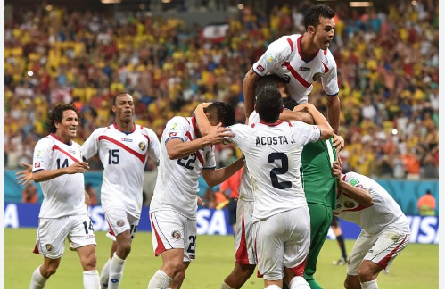
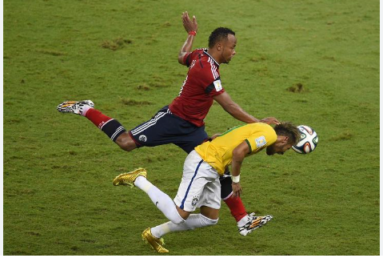
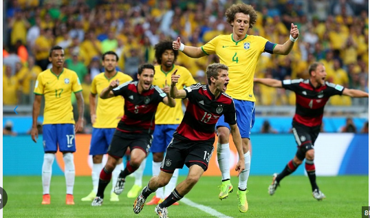
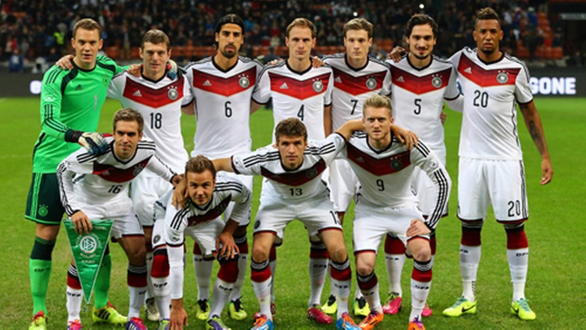

COPA DO MUNDO DE 2014

historia da copa do mundo de 2014
a vigésima edição do torneio ocorreu no Brasil em que o país foi sede pela segunda vez além da copa de 1950 e
contou Com doze cidades-sede, o campeonato começou a ser disputado no dia 12 de junho e terminou em 13 de
julho. A edição de 2014 foi a quinta realizada na América do Sul, depois de a Argentina ter sediado o torneio
pela última vez no continente em 1978. O Brasil foi a 2.ª e última sede do torneio mundial escolhida através da
política de alternância de continentes.As seleções nacionais de 31 países avançaram através de competições de
qualificação, que começaram em junho de 2011, para participar com o país anfitrião , o Brasil , no torneio
final. Um total de 64 jogos foram jogados em doze cidades de todo o Brasil em estádios novos ou reconstruídos,
iniciando o torneio com uma fase de grupos. Pela primeira vez em uma Copa do Mundo, as partidas usaram a
tecnologia goal-line(que foi uma tecnologia usada pela FIFA com um chip na bola para indicar ao árbitro que a
bola passou da linha do gol para evitar gols mal anulados que ocorreu em edições anteriores). No dia 15 de
junho, na partida entre França e Honduras, ocorreu o primeiro gol oficial
a utilizar o sistema.
 Goal-Line Technology(tecnologia da bola dentro do gol)
Goal-Line Technology(tecnologia da bola dentro do gol)
Com o país anfitrião, todas as equipes campeãs do mundo desde a primeira Copa do Mundo, em 1930 (Uruguai, Itália,
Alemanha, Inglaterra, Argentina, França e Espanha) qualificaram-se para esta competição. Nesta edição, a
Alemanha sagrou-se campeã pela quarta vez (a primeira depois da reunificação do país), repetindo suas
vitórias nas edições de 1954, 1974 e 1990. Foi a primeira vez que uma seleção europeia conquistou o título no
continente americano. As quatro Copas do Mundo anteriores sediadas pela América do Sul foram todas ganhas por
seleções sul-americanas, assim como outras três edições sediadas na América do Norte.
De acordo com estatísticas da FIFA, esta foi a Copa mais poluente da história (2,72 milhões de toneladas
métricas de dióxido de carbono), mas, ao mesmo tempo, a mais sustentável (os estádios construídos ou
modernizados para a Copa adotaram tecnologias para aproveitar a água de chuva, a radiação UV, fontes renováveis
de energia e iluminação de baixo consumo energético, entre outras).[9] Em uma conferência realizada na Cidade do
Panamá, em setembro de 2014, e organizada pela FIFA, os representantes de 45 federações afiliadas à Confederação
de Futebol da América do Norte, Central e Caribe e à Confederação Sul-Americana de Futebol avaliaram o trabalho
realizado na Copa de 2014 como "o melhor futebol já visto na história dos Mundiais".Foram convocados 23
jogadores por seleção, sendo obrigatoriamente três goleiros. No total 736 jogadores foram convocados nas 32
seleções, sendo 96 goleiros.

O Brasil estava em erupção em 2014. Escândalos de corrupção fizeram o Governo perder credibilidade. Manifestações
populares viraram rotina e o povo, que calado estava, calado nunca mais ficou. No meio disso, havia uma Copa do
Mundo, que era alvo de protesto de muitos. Mais de seis décadas depois, o maior torneio de futebol do mundo
estava de volta ao Brasil. No meio do caos, a bola rolou, e trouxe caos para a seleção brasileira, e glória aos
alemães.A escolha do Brasil como sede começou a ser desenhada em ainda em 2003, com a definição da América do
Sul como
sede em potencial. O Brasil superou Argentina e Colômbia e ganhou a chancela da Conmebol. Em 2007, o namoro
evoluiu. Com confiança pela realização com sucesso dos Jogos Pan-Americanos no Rio de Janeiro naquele ano, o
Brasil foi confirmado como país-sede da Copa do Mundo de 2014.
Campeões presentes, mas não por muito tempo
A Copa do Mundo de 2014 recebeu todos os campeões do mundo. O Uruguai foi o que se qualificou com mais
sofrimento, na repescagem. E acabou no grupo com outros dois campeões: Itália e Inglaterra.O grupo D era
considerado o grupo da morte, e ninguém dava nada pela Costa Rica. Mas o Brasil inspirou os
costarriquenhos a escreverem uma bela história.Logo na primeira partida, a Costa Rica aproveitou um Uruguai
ainda sem Luis Suárez para vencer por 3 a 1 e
alertar o mundo sobre o que vinha por aí. O time de Keylor Navas, Bryan Ruíz e Joel Campbell venceu em seguida a
Itália (1 a 0) e se garantiu nas oitavas com um empate sem gols diante da Inglaterra.As duas seleções da Europa
acabaram eliminadas na primeira fase. Com Suárez de volta, e em grande forma, o
Uruguai bateu o English Team e os Azzurri e se garantiu no mata-mata.Outra campeã do mundo que caiu ainda na
primeira fase foi a Espanha, campeã quatro anos antes. Os espanhóis até
começaram a Copa abrindo vantagem sobre a Holanda em Salvador, mas depois do belíssimo gol de peixinho de Robin
van Persie acabaram atropelados e levaram de 5 a 1, perdendo a seguir para o Chile e caindo com um empate sem
gols diante da Austrália.

Costa Rica,a grande sensação da competição ao ser lider do grupo da morte
Brasil avança sem convencer
A seleção brasileira chegou para aquela Copa sob desconfiança. Depois de demitir Dunga, a CBF chamou de volta os
dois últimos técnicos brasileiros campeões do mundo, Luiz Felipe Scolari e Parreira (este como coordenador),
para tentar faturar o hexa em casa. O clima no país, como já citado, não era dos mais tranquilos. Em meio a
diversas manifestações, a seleção
brasileira tentou focar no futebol. E tinha em Neymar a grande esperança para o título.Dessa vez não houve
nenhuma grande ausência na convocação. E o Brasil vinha de um bom papel em casa no ano
anterior, com a conquista da Copa das Confederações, no Maracanã, com um categórico 3 a 0 diante da Espanha. O
Brasil deixou algumas dúvidas na primeira fase com um empate sem gols diante do México, mas venceu até bem
Croácia (apesar do gol contra de Marcelo) e Camarões.As oitavas de final foram um sofrimento só. Apesar do
golaço de falta de David Luiz, o Brasil só conseguiu
eliminar o Chile nos pênaltis, depois de muito drama na prorrogação.Nas quartas, o primeiro sinal de que a Copa
estaria acabando. A adversária era a Colômbia, que havia eliminado o
Uruguai, no Maracanã, com um dos gols mais bonitos daquele torneio, de James Rodríguez. Já na reta final do
jogo, Neymar levou uma forte entrada nas costas de Camilo Zúniga e deixou o campo chorando. O craque estava fora
da Copa. O Brasil avançou, vencendo por 2 a 1, mas Neymar fez falta...

lance que tirou Neymar da copa
Enfim, o futebol arte, e o vexame do 7 a 1
A Alemanha soube jogar a Copa do Mundo no Brasil. Ganhou o povo brasileiro com simpatia fora do gramado, e uma
experiência incrível no dia a dia de treinos na Bahia, e com um futebol irresistível.O futebol arte que o povo
brasileiro queria ver foi apresentado pelos alemães. Já na estreia, um massacre: 4 a 0
sobre Portugal em mais um jogaço que o povo baiano teve o privilégio de ver.Gana (2 a 2) e Estados Unidos (1 a
0) fizeram jogos difíceis, mas os alemães avançaram em primeiro na chave. E a
classificação diante da Argélia só veio na prorrogação no Beira-Rio. Nas quartas de final, eficiência pura na
vitória por 1 a 0 sobre a França, gol de Mats Hummels. Mas o melhor ainda estava por vir...
No dia 08 de julho de 2014, Alemanha e Brasil se enfrentaram no Mineirão naquela partida que quem viu de perto
tem história para contar para o resto da vida. Mais um momento lendário da Copa das Copas, porém doloroso para
os brasileiros.É difícil contar o que aconteceu. Neymar fez falta. A defesa brasileira estava absolutamente
assustada. Os
jogadores sentiram a pressão. E a Alemanha acertou tudo o que fez.Em 30 minutos já estava 5 a 0 para a Alemanha,
em ritmo de treino. Miroslav Klose se tornou o maior artilheiro
das Copas debaixo dos olhos de Ronaldo, o antigo maior goleador, que via, já como comentarista, com vergonha sua
seleção sucumbir. Thomas Müller, Toni Kroos, Sami Khedira e André Schürrle impuseram o maior vexame da história
da seleção brasileira. O gol de Oscar no fim esteve longe de ser o gol de honra. O 7 a 1 nunca sairá da memória
dos brasileiros...

alemanha7x1brasil.o maior vexame brasileiro nas historias da copa
Festa alemã no Maracanã
A Alemanha enfrentou a Argentina na grande decisão da Copa do Mundo de 2014, na segunda final de Mundial
disputada no Mário Filho, o Maracanã. Os argentinos "invadiram" o Rio de Janeiro: do sambódramo até Ipanema, de
Botafogo até a Lapa. E o destino final foi Mário Filho, com uma festa em Copacabana para os que não puderam ver
de perto a decisão.Era a chance de Lionel Messi, um dos maiores jogadores da história, enfim conquistar a glória
com seu país. Mas
Messi esteve longe de ser decisivo no Brasil. A Argentina esteve longe de ser brilhante, mas o destino poderia
ter sido outro se Gonzalo Higuaín estivesse em
um dia melhor (há quem diga que nem assim o Pipita não perderia o gol que perdeu).
Os alemães também não fizeram uma grande final, e o jogo foi para a prorrogação. Foi quando surgiu, como em todo
roteiro de sucesso que se preze, o herói improvável: Mario Götze surgiu no meio da defesa argentina e confirmou
que a Alemanha é tetracampeã mundial, com um grito que começou no Maracanã e ecoou em todo mundo.

Alemanha tetracampeã mundial
Estadios da copa 2014
Maracanã

Maraca, é um estádio de futebol localizado na Zona Norte da cidade brasileira do Rio de Janeiro.[6] Foi
inaugurado em 1950, inicialmente com o nome de Estádio Municipal, durante o mandato do então general de
divisão e prefeito do Distrito Federal do Rio de Janeiro Ângelo Mendes de Moraes, tendo sido utilizado na Copa
do Mundo de Futebol daquele ano. Quando da sua inauguração, a capacidade oficial de 155 mil lugares fez o
Maracanã superar o Hampden Park, de Glasgow, e se tornar o maior estádio do mundo na época.
Desde então, o Maracanã foi palco de grandes momentos do futebol brasileiro e mundial, como o milésimo gol de
Pelé, finais do Campeonato Brasileiro, Campeonato Carioca, Copa Libertadores da América, da primeira Copa do
Mundo de Clubes da FIFA e da Copa América de 2021, além de competições internacionais e partidas da Seleção
Brasileira.
O estádio foi um dos locais de competição dos Jogos Pan-Americanos de 2007, recebendo o futebol, as cerimônias
de abertura e de encerramento. Igualmente sediou as partidas de futebol e as cerimônias de início e de
encerramento dos Jogos Olímpicos de Verão de 2016, ambos eventos realizados na cidade do Rio de Janeiro. Foi
também o palco das partidas finais da Copa das Confederações FIFA de 2013 e da Copa do Mundo FIFA de 2014.
Ao longo do tempo, no entanto, o estádio passou a assumir caráter de espaço multiúso ao receber outros eventos
como espetáculos e partidas de outros esportes, como o voleibol em uma oportunidade. Após diversas obras de
modernização, a capacidade do estádio é de 78 838 espectadores, sendo o maior estádio do Brasil.
Estádio Nacional de Brasília Mané Garrincha

A Arena BRB Mané Garrincha é um estádio de futebol e arena multiuso brasileiro, situado em Brasília, no
Distrito Federal.O estádio faz parte do Complexo Poliesportivo Ayrton Senna, que engloba também o Ginásio de
Esportes Nilson
Nelson e o Autódromo Internacional de Brasília Nelson Piquet, dentre outros. Inaugurado em 1974, o estádio tinha
a capacidade de acomodar 45.200 pessoas.Após a reforma de 2010-2013, iniciada para receber a Copa do Mundo FIFA
de 2014, sua capacidade foi aumentada
para 72.788 pessoas, tornando-se o segundo maior estádio do Brasil e um dos maiores da América, atrás do
Maracanã (RJ). O estádio atualmente pertence à Agência de Desenvolvimento do Distrito Federal (Terracap).
Inicialmente prevista para 31 de dezembro de 2012 e posteriormente para 21 de abril de 2013, a
inauguração do novo estádio foi em 18 de maio de 2013.Entre os eventos-teste após sua inauguração, o estádio foi
palco da final do Campeonato Brasiliense de 2013, no
dia 18 de maio (Brasiliense x Brasília) e em 26 de maio de 2013 Santos x Flamengo, válida pelo 1º Rodada do
Campeonato Brasileiro (Brasileirão). Um dos argumentos usados para a reconstrução do estádio era que
Brasília não contava com nenhum local apto a receber grandes eventos, que eram então realizados no canteiro
central da Esplanada dos Ministérios ou no estacionamento do antigo estádio.
Arena Corinthians

A Neo Química Arena, anteriormente denominada como Arena Corinthians, é um estádio de futebol localizado
no distrito de Itaquera, na Zona Leste do município de São Paulo, Brasil. De propriedade do Sport Club
Corinthians Paulista, sua capacidade é de 49.205 lugares, sendo o 13º maior estádio do Brasil. O Ministério do
Esporte lançou o Sistema Brasileiro de Classificação de Estádios (Sisbrace), que propõe a melhoria em conforto,
segurança, acessibilidade e condições sanitárias e de higiene dos estádios do país, tendo a Arena Corinthians
recebido avaliação máxima com cinco bolas, além de ganhar também o prêmio de melhor projeto de arquitetura
do país no ano de 2011.
A arena foi inaugurada oficialmente em 18 de maio de 2014 em uma partida entre a equipe do Corinthians e o
Figueirense, com derrota do time paulista pelo placar de 1 a 0, na Série A do Brasileiro daquela temporada.
Poucas semanas depois de sua inauguração oficial, sediou a cerimônia de abertura da Copa do Mundo FIFA de 2014,
que incluiu a partida entre Brasil e Croácia, no qual Brasil venceu por 3x1, e outros cinco duelos do torneio,
entre os quais uma semifinal. Devido à exigência da FIFA de pelo menos 60 mil lugares para o jogo inaugural da
Copa do Mundo, foram incluídos mais 19 800 assentos temporários ao estádio exclusivamente para atender a
exigência. Com o fim do Mundial de 2014, o Corinthians determinou a retirada das estruturas
temporárias.
Construído pela Odebrecht entre 2011 e 2014, a obra tinha previsão de custo inicial em 820 milhões de reais,
mas seu preço final atingiu quase 1,2 bilhão de reais, incluindo uma isenção tributária de 420 milhões de reais
por parte da prefeitura do município de São Paulo. Além dos vastos recursos financeiros utilizados em sua
construção, a arena também recebeu críticas pelas circunstâncias em que foi escolhida como o estádio oficial da
Copa do Mundo e pelas condições de trabalho dos operários que participaram da obra. A Arena Corinthians atingiu
a marca de 4 milhões de torcedores(as) no seu 124º jogo, tendo média de 32 308 pagantes por partida e arrecadou
o montante superior a 234 milhões de reais.
Mineirão

O Estádio Governador Magalhães Pinto, mais conhecido como Mineirão, é um estádio de futebol localizado em Belo
Horizonte, Minas Gerais, onde os clubes Cruzeiro Esporte Clube e Clube Atlético Mineiro mandam os seus jogos.
Inaugurado em 1965, é o quinto maior estádio do Brasil, já tendo sediado cinco finais da Copa Libertadores, uma
Copa Intercontinental e escolhido como uma das sedes da Copa do Mundo FIFA de 2014. Em 2003, foi tombado pelo
Conselho Deliberativo do Patrimônio Cultural do Município de Belo Horizonte.
Em junho de 2014, tornou-se primeiro estádio brasileiro e o segundo do mundo a conquistar a categoria máxima de
certificação ambiental Leadership in Energy and Environmental Design, concedida pelo Green Building Council
Institute. O Mineirão ficou marcado como o palco da maior derrota da Seleção Brasileira de Futebol, uma goleada
de 7 x 1 da
Alemanha na semifinal da Copa do Mundo FIFA de 2014, que ficou conhecida como Mineiraço.
O estádio é parte do Conjunto Arquitetônico da Pampulha, projetado por Oscar Niemeyer sob encomenda do prefeito
Juscelino Kubitschek e construído entre 1942 e 1944. Em 17 de julho de 2016, o local passou a ser considerado um
Patrimônio da Humanidade após reunião de membros da Unesco em Istambul, na Turquia.
Arena Castelão

O Estádio Governador Plácido Castelo, também conhecido como Arena Castelão, ou simplesmente Castelão, é um
estádio de futebol brasileiro localizado em Fortaleza, Ceará, e inaugurado em 1973. Sua capacidade atual é de
até 63.904 espectadores. Está entre os 60 maiores estádios do mundo, é o quarto maior do Brasil e o maior do
Norte/Nordeste. É o primeiro estádio da América do Sul a obter a certificação ambiental Leed.
O estádio foi reformado em 2002, e totalmente remodelado em 2012, em decorrência da Copa do Mundo FIFA de 2014,
evento do qual foi uma das sedes, recebendo seis jogos, entre eles um jogo das oitavas de final, um das
quartas de final e dois jogos da Seleção Brasileira.
Já foi palco de grandes eventos esportivos e culturais, como jogos da Seleção Brasileira e a recepção ao Papa
João Paulo II em 1980, em sua passagem pela capital do estado. Entre competições nacionais de futebol, foi sede
das finais do Campeonato Brasileiro Série B de 2002, da Copa dos Campeões de 2002, da Copa do Brasil de 1994 e
da Copa do Nordeste de 2014, de 2015, de 2022 e de 2023.
Em 2013, foi uma das sedes da Copa das Confederações; em 2014, recebeu jogos da Copa do Mundo e, em 2016,
foi um dos centros de treinamento para os Olimpíadas de 2016 como parte integrante do Centro de Formação
Olímpica do Nordeste, um dos maiores centros de formação esportiva de alto nível do país.
Estádio Beira-Rio

O Estádio José Pinheiro Borba (popularmente conhecido como Beira-Rio ou pelo apelido carinhoso de Gigante da
Beira-Rio) é um estádio de futebol localizado às margens do lago Guaíba na cidade de Porto Alegre, Brasil.
Pertence ao Sport Club Internacional e sua capacidade é para 50 982 torcedores, sendo o 10.º maior estádio do
Brasil.
O Beira-Rio foi inaugurado oficialmente em 6 de abril de 1969, numa partida amistosa entre a equipe do
Internacional e o Benfica, de Portugal, para um público de mais de 100 mil pessoas. O jogo acabou em 2 a 1 para
o time brasileiro, uma vitória histórica contra uma das melhores equipes da época, e que contava, entre outros
craques, com Eusébio.
Desde então, o Beira-Rio foi palco de grandes momentos do futebol brasileiro e mundial, como finais do
Campeonato Brasileiro, da Copa Libertadores da América, da Copa Sul-Americana, da Copa do Brasil e cinco jogos
da Copa do Mundo FIFA de 2014, além de competições internacionais e partidas da Seleção Brasileira.
O Beira-Rio passou por um grande processo de modernização visando à Copa do Mundo de 2014. As obras do projeto
denominado Gigante para Sempre começaram em março de 2012 e duraram cerca de dois anos. Neste período, a casa
dos colorados foi adaptada às exigências e padrões internacionais do futebol estipulados pela FIFA, tornando-se
mais confortável e segura.
O estádio adaptou-se às mais recentes exigências e padrões internacionais do futebol, pronto para sediar
qualquer jogo nacional ou internacional, com um complexo esportivo sustentável. A casa do Internacional recebeu
cinco partidas da Copa do Mundo de 2014. Foi batizado em homenagem ao cidadão português e colorado que presidiu
a comissão de obras e comandou a construção, que morreu pouco antes de sua conclusão.
Arena Fonte Nova

A Arena Fonte Nova é um estádio de futebol localizado em Salvador, no estado brasileiro da Bahia, reconstruído no
mesmo local do antigo Estádio Octávio Mangabeira. O nome oficial do equipamento é Complexo Esportivo
Cultural Octávio Mangabeira. Entretanto, por questões de patrocínios de nome ganhou a denominação Itaipava
Arena Fonte Nova, ao mesmo tempo que manteve o apelido do antigo estádio que substituiu, também sendo conhecido
popularmente como Fonte Nova.
Para a construção, a antiga estrutura foi implodida em 29 de agosto de 2010 para dar lugar à Arena Fonte Nova,
projeto de sede baiana para a Copa do Mundo FIFA de 2014. No início do mês de janeiro de 2013 atingiu 90% das
obras concluídas, tendo sido o quarto estádio mais avançado dentre os doze que sediaram a Copa das Confederações
de 2013 e a Copa do Mundo de 2014. E em março, alcançou 99% das obras concluídas. O estádio foi
oficialmente inaugurado no dia 5 de abril com presença da então presidente Dilma Rousseff. O primeiro
jogo da arena foi o clássico Ba-Vi, ocorrido dois dias depois, onde o Vitória se sagrou vencedor por 5 a
1. Renato Cajá, jogador do rubro-negro baiano, entrou para a história ao marcar o primeiro gol
após a inauguração.
Utiliza o mesmo modelo de gestão multiuso de sucesso na Europa, o da Johan Cruijff Arena, um dos maiores centros
de lazer do mundo, casa do Ajax e parceiro na operação da nova arena baiana. O estádio tem capacidade
oficial para 47.907 pessoas em três níveis de arquibancadas com assentos cobertos, camarotes, vista para o
estádio e para o Dique do Tororó e 2 mil vagas de estacionamento. Sua estrutura abriga também sala de imprensa,
quiosques, elevadores, sanitários e centro de negócios que funciona independentemente dos jogos.Além de
partidas de futebol, a Arena Fonte Nova permite a realização de outros eventos como apresentações musicais,
congressos e encontros de negócios. Sua estrutura verticalizada, com três anéis de arquibancada, coloca
o público mais próximo do espetáculo promovendo um maior envolvimento e favorecendo a acústica.
Arena de Pernambuco

O Estádio Governador Carlos Wilson Campos, conhecido como Arena de Pernambuco, é um estádio de futebol construído
em São Lourenço da Mata, município da Região Metropolitana do Recife, para os jogos da Copa das Confederações
FIFA de 2013 e da Copa do Mundo FIFA de 2014 em Pernambuco.
Com padrão internacional, tem capacidade para 44.300 pessoas e 4.700 vagas de estacionamento, sendo 800
cobertas.Após o Mundial, a arena vem sendo usada para jogos de futebol, outras competições esportivas, feiras,
convenções, shows e grandes espetáculos dos mais variados portes e tamanhos. Paralelamente a isso, a Arena de
Pernambuco também sedia eventos privados, como confraternizações de empresas e firmas, além de reuniões
comerciais, com mais de 25 espaços diferentes para eventos.O custo foi de sua obra foi de R$ 532 milhões. A
arena é administrada atualmente pelo Governo de Pernambuco.
Arena Pantanal

A Arena Pantanal é uma arena multiuso construída na cidade de Cuiabá, estado de Mato Grosso, Brasil. A nova arena
Multiuso tem a missão de substituir o antigo Estádio Governador José Fragelli, conhecido popularmente como
"Estádio Verdão", demolido para dar lugar ao novo estádio.
O novo estádio, construído de acordo com todas as exigências da FIFA, sediou 4 partidas da Copa do Mundo FIFA
2014, abrigando as seleções da Austrália, Coreia do Sul, Chile, Bósnia e Herzegovina, Nigéria, Japão, Colômbia e
Rússia, e sediou também 5 jogos da Copa América 2021. Sua capacidade de público está estimada em 44.097 pessoas.
O investimento total na construção da obra foi orçada em R$ 454,2 milhões, incluindo já a parte de tecnologia de
informação, assentos e obras do entorno do estádio. Porém, as atuais medições por parte dos governos estadual e
federal chegaram à casa dos 600 milhões.O estádio foi reinaugurado em 2 de abril de 2014 com Mixto 0x0 Santos
pela Copa do Brasil, para um público de 17 mil pessoas. Pelo mesmo torneio, o Cuiabá empatou em 1 x 1 com o
Internacional para o maior público antes da Copa do Mundo, 21 mil pessoas. Outras duas partidas incluíram um
time mato-grossense na Série B - Luverdense 2x1 Vasco - e o retorno do Santos para o último jogo-teste pela
Série A, uma derrota de 2-1 para o Atlético-MG.
O primeiro jogo após a Copa foi em 15 de julho, com Vasco 4x1 Santa Cruz pela Série B.
Cinco dias depois, o futebol mato-grossense voltou pela Série C, uma vitória de 3x2 do Cuiabá sobre o Paysandu
que foi o sexto maior público do fim de semana no Brasil com 13.658 pagantes.[9] Em seguida o estádio abrigaria
quatro rodadas duplas com os times mato-grossenses das Séries B, C e D - Luverdense, Cuiabá e Operário.[10] As
rodadas duplas, preços baixos, e atrair equipes da Série A para ocasionais partidas fez a Arena Pantanal abrigar
11 partidas de todas as quatro divisões e da Copa do Brasil entre julho e setembro, com público total de 139.960
espectadores e média de 12,7 mil torcedores por partida.
Quando a Arena Pantanal completou um ano em abril de 2015, havia recebido 41 jogos, com 99 gols marcados, e
partidas das quatro divisões do Campeonato Brasileiro, Copa do Mundo, Copa do Brasil, Copa Verde, Campeonato
Mato-grossense e um amistoso da seleção sub-23. O público acumulado foi 359.769 espectadores (abaixo dos 550 mil
que são a população total de Cuiabá), uma média de 9 mil. Durante o Campeonato Mato-Grossense de 2015, que viu o
retorno das rodadas duplas, a média de público foi 879 pessoas.
Arena da Baixada

O Estádio Joaquim Américo Guimarães ou Ligga Arena (por razões de naming rights) ou ainda Arena da Baixada (como
é mais conhecido), é a arena do Club Athletico Paranaense, localizado em Curitiba, capital do estado do Paraná,
Brasil. É conhecido por ser a primeira arena, entre os utilizados para competições da CBF, a ser homologado para
uso da grama sintética. É também o primeiro estádio da América Latina equipado com teto retrátil e o pioneiro
no Brasil ao trabalhar com naming rights junto ao seu departamento de marketing.Conhecido como Arena da Baixada,
o espaço foi o primeiro palco do futebol brasileiro a adotar o naming rights com o título de Kyocera Arena entre
2005 e 1º de abril de 2008 e com a escolha de Curitiba para ser uma das sedes da Copa do Mundo de 2014, a Arena,
entre 2012 e 2014, foi reformada, com a ampliação de capacidade de modo a atender os padrões exigidos pela FIFA,
passando a ter 42.370 lugares (capacidade de operação conforme CNEF/CBF 2014 é idêntica à capacidade
oficial).
Localizado no bairro do Água Verde, tem como forte diferencial sua localização, próximo ao centro da capital
paranaense. A história do estádio do Athletico começou no início do século XX, quando em 1914, Joaquim Américo
Guimarães, então presidente do Internacional (clube que originaria o Clube Atlético Paranaense), comandou a
construção do estádio Baixada da Água Verde. O Atlético surgiu dez anos depois, herdando o patrimônio e
batizando o estádio com o nome do principal responsável por seu surgimento.
Em 1934, o estádio foi batizado, oficialmente, com o nome do fundador do International Foot-Ball Club, Joaquim
Américo Guimarães. Em junho de 2023, o Athletico anunciou a venda dos naming rights para a Ligga Telecom,
com o estádio passando a se chamar Ligga Arena a partir de 2023.
Arena das Dunas

Arena das Dunas (ou Arena Marinho Chagas) é um estádio multiúso localizado na cidade de Natal, no
estado brasileiro do Rio Grande do Norte. Além de partidas de futebol, o complexo tem a capacidade de abrigar
eventos de grande porte, exposições e lojas comerciais. A estrutura foi inaugurada em 22 de janeiro de 2014,
depois de 29 meses de obras, no lugar do Estádio João Machado. É gerenciada pela OAS Arenas.
Localizada no bairro de Lagoa Nova, entre a BR-101 e a Av. Prudente de Morais, duas importantes artérias viárias
da cidade, a arena foi viabilizada através de uma parceria público-privada entre a OAS Engenharia e o governo do
estado, tendo a finalidade precípua de sustentar a candidatura da capital potiguar para a Copa do Mundo FIFA de
2014, de onde recebeu quatro partidas do evento mundial.
Posteriormente projetada para ter uso variado, se viabilizando financeiramente, o complexo tem a capacidade de
31.375 espectadores. Durante a Copa do Mundo, a arena contou com arquibancadas flexíveis, que permitiu a
expansão para 42 mil assentos. A arquitetura do estádio, inspirada nas dunas do Rio Grande do Norte, foi
projetada pela empresa estadunidense Populous.
Arena da Amazônia

A Arena da Amazônia Vivaldo Lima, ou simplesmente Arena da Amazônia, é um estádio multiuso localizado na cidade
de Manaus, capital do Amazonas. Foi construída no mesmo local antes ocupado pelo Estádio Vivaldo Lima. A
homenagem ao velho entusiasta do esporte amazonense, Vivaldo Lima, que havia no nome do estádio anterior, foi
mantida no nome do estádio "Arena da Amazônia Vivaldo Lima" para preservar a história do futebol local (Lei
3.966 de 9 de dezembro de 2013 publicada no Diário Oficial do Estado do Amazonas).
O estádio construído para ser utilizado como uma das 12 sedes da Copa do Mundo FIFA de 2014 e foi inaugurado em
9 de março de 2014. O arquiteto autor de seu projeto é Ralf Amann do escritório alemão GMP.
O custo de sua construção foi dividido em 25% para o Governo Estadual do Amazonas e 75% ao BNDES. A empreiteira
Andrade Gutierrez foi a vencedora da licitação para a construção.
Em fevereiro de 2015, o estádio foi eleito o "2º melhor estádio do ano de 2014" pelo site inglês “Stadium
DataBase” em uma enquete realizada por um júri selecionado pelo próprio site.
Com arquitetura inspirada na floresta amazônica que rodeia a cidade de Manaus, a Arena da Amazônia é um estádio
totalmente novo, construído de acordo com premissas de sustentabilidade e localizado estrategicamente entre o
Aeroporto Internacional de Manaus e o centro histórico da capital amazonense.
O estádio tem capacidade para 44.000 torcedores e conta com camarotes, elevadores, quatrocentas vagas para
estacionamento subterrâneo, acessibilidade para portadores de necessidades especiais, restaurante, sistema de
aproveitamento de água da chuva, estação de tratamento de esgoto e ventilação natural para redução do consumo de
energia.
Localizado entre as avenidas Constantino Nery, Pedro Teixeira e Loris Cordovil, no lugar antes ocupado pelo
antigo Estádio Vivaldo Lima, a Arena da Amazônia fica ao lado do Sambódromo de Manaus, do novo Centro de
Convenções do Amazonas e da Arena Poliesportiva Amadeu Teixeira.